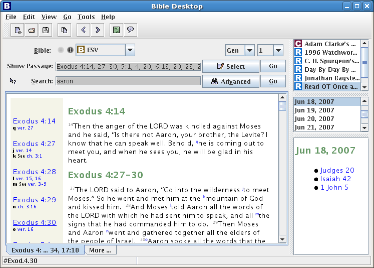
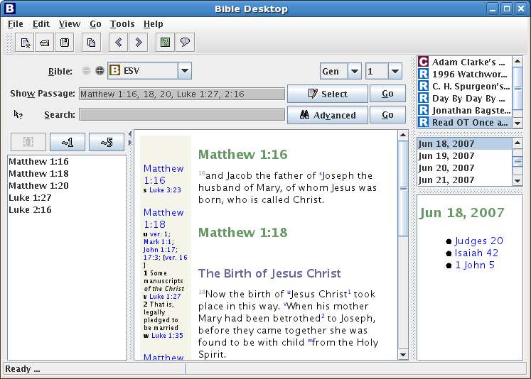
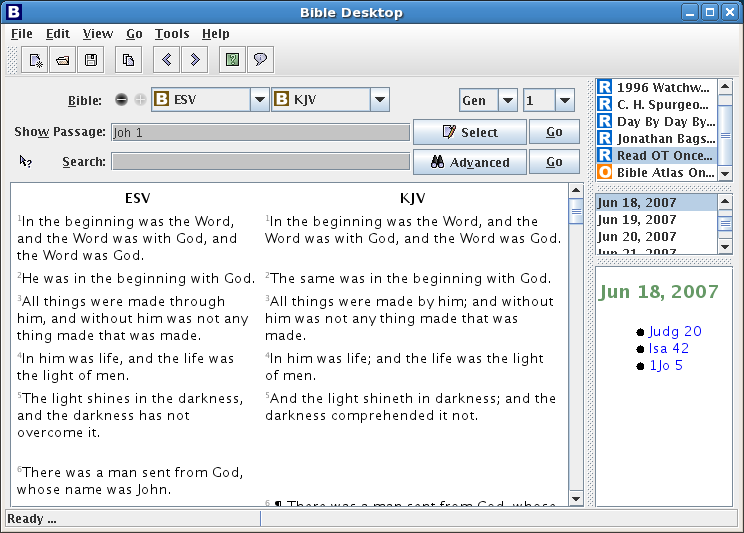

The opening screen. We've just done a search for "aaron", the list of verses with "aaron" shows in the "Show Passage" edit-box (which is editable) along with a display of the matching passages. Since there were more matches than would fit on a single page there are a number of tabs (along the bottom) that show successive parts of the search. This helps speed things up if there are a large number of matches to a search.

Another search, returning less matches this time, and we have turned the "Passage Sidebar" on. This gives you a list of matches, selecting from the list filters the passages shown in the main window on the right.

From the "Passage Sidebar" we click the "~1" button, which gives you an extra verse of context around each verse that you can see. The views have automatically merged the passages that now overlap. So in the last picture where Mat 1:16, 18, 20 all match, after we expand by 1 verse we would get Mat 1:15-17, and Mat 1:17-19 and Mat 1:19-21, which is the same as Mat 1:15-21.
We can just type a passage to view in the view area. If the passage is too large to fit then we get the bottom tabs as before. Bible Desktop will do a good job of working out what you want to see from what you type in the view area.

For when you want to do a more in-depth study, perhaps doing a search and then investigating the matches in more detail there is a tabbed mode that lets to keep the results of a number of searches. The tabs are given names to match what you are doing in that view.

Or if you don't like tabbed mode there is also a windowed that will let you see several passages at the same time. Generally speaking you'd want the window a little bigger than we have it here to make the most of this mode!

You can also view different versions of the Bible in parallel. Just click on the "+" button and select another version. When you view Bibles in parallel, it is best to turn off headings and notes. Verses will automatically start on new lines.

Once you are viewing different Bibles in the same language in parallel, you can compare them by selecting "Show Differences" Between the different versions will be a column showing the edits necessary to transform the left column into the right one. Additions are underlined and deletions are crossed out.

Bible Desktop can also show images. Here we are showing "Bible Atlas Online" in a small window with the Bible View completely minimized. The window here is way too small to be useful.